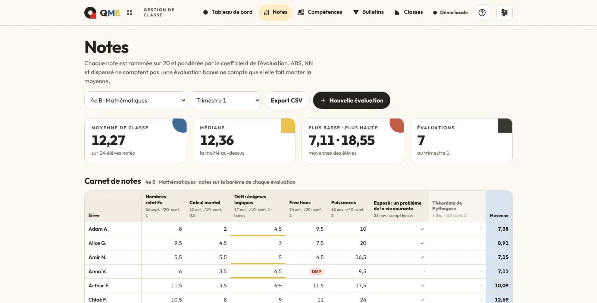
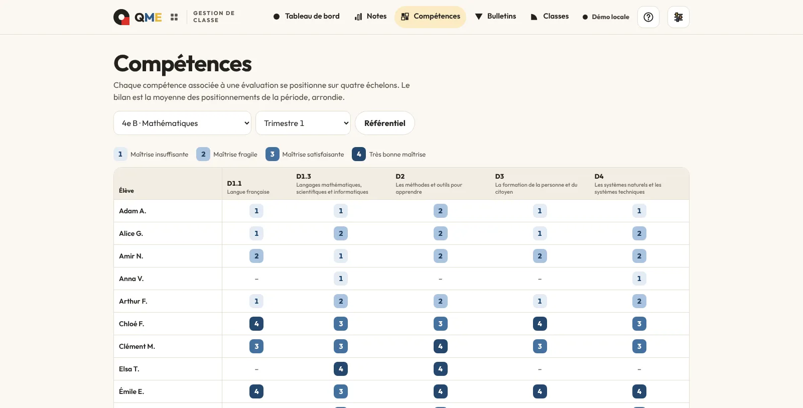
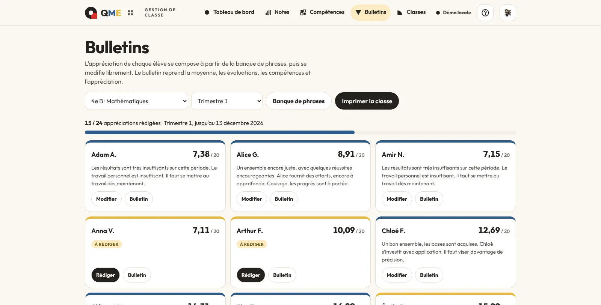
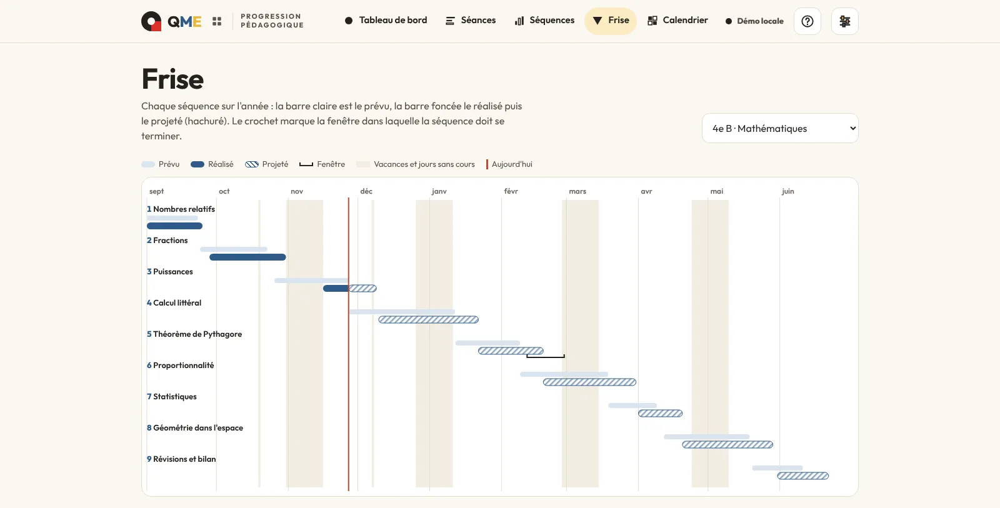
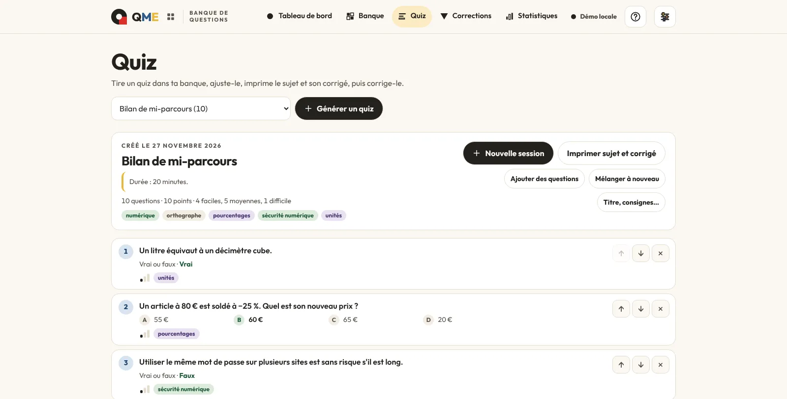
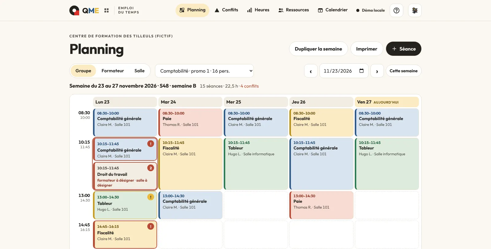

Concept pour les écoles hors contrat et le soutien scolaire · pack prêt à l'emploi
Les notes, les bulletins et l'emploi du temps, au même endroit.
Quatre outils en ligne déjà prêts pour les écoles privées hors contrat, du primaire au lycée, et les centres de soutien scolaire indépendants : le carnet de notes qui calcule les moyennes et prépare les bulletins, la progression de chaque classe sur l'année, une banque de questions qui génère les quiz, et l'emploi du temps des classes, des enseignants et des salles. Ils s'utilisent tels quels dès le premier jour, et je peux les adapter sur mesure à votre école.
Chaque démo s'ouvre sans inscription sur des données fictives (classes, élèves désignés par un prénom et une initiale, enseignants, salles) et reste dans votre navigateur. Toutes les données affichées sur cette page sont fictives.
Le quotidien
Un tableur de notes par enseignant, des appréciations recopiées à la main dans chaque bulletin, une progression dans un classeur et un emploi du temps refait à chaque changement de salle.
Ce que cela coûte
Des moyennes recalculées le soir du conseil de classe, un coefficient oublié, un chapitre qui prend trois semaines de retard sans que personne ne le voie, une salle donnée à deux classes.
Ce que fait l'outil
Il calcule moyennes et bilans de compétences, compose les bulletins, compare la progression prévue au réalisé et signale chaque conflit d'enseignant ou de salle à la saisie.
01 · Notes
Le carnet de notes qui calcule seul
Chaque note ramenée sur 20 et pondérée par son coefficient ; absences et dispenses exclues.
- Moyenne, médiane, plus basse et plus haute de la classe
- Évaluations bonus qui ne comptent que si elles font monter la moyenne
- Notes manquantes et évaluations en retard signalées

02 · Compétences
Les compétences positionnées sur quatre échelons
Chaque compétence rattachée à une évaluation ; le bilan de la période se calcule seul.
- Référentiel repris du socle commun ou construit par vous
- De « maîtrise insuffisante » à « très bonne maîtrise »
- Bilan par élève et par domaine sur la période

03 · Bulletins
Des appréciations rédigées plus vite, un bulletin prêt à imprimer
Une banque de phrases pour composer l'appréciation, puis modifiable librement.
- Avancement : « 15 / 24 appréciations rédigées »
- Bulletin avec moyenne, évaluations, compétences et appréciation
- Impression de toute la classe en une fois

04 · Progression
La progression de chaque classe, prévu face au réalisé
Séquences et séances planifiées sur l'année, vacances comprises.
- Frise de l'année : prévu, réalisé et fin projetée
- Retard d'une séquence visible avant la fin du trimestre
- Une progression par classe et par matière

05 · Quiz
Une banque de questions qui génère les quiz
QCM, vrai ou faux et réponses courtes, étiquetés par thème et par difficulté.
- Quiz tiré de la banque, sujet et corrigé imprimés
- Taux de réussite réel de chaque question
- Corrections, puis réussite par question et par étiquette

06 · Emploi du temps
Les classes, les enseignants et les salles, sans conflit
Vue semaine par classe, par enseignant ou par salle ; vue jour sur téléphone.
- Enseignant, salle ou classe pris deux fois au même moment : signalé avant d'enregistrer
- Capacité des salles, disponibilités et absences des enseignants
- Heures réalisées par classe et par matière, comparées au volume prévu

Prêt à l'emploi, ou sur mesure
Les outils sont prêts : ils s'ouvrent en ligne, sur ordinateur, tablette ou téléphone, avec une seule clé, et vos données sont synchronisées. Achat unique, sans abonnement ni renouvellement. Chaque outil s'essaie 14 jours, sans carte bancaire.
Le pack « Écoles et formateurs »
111 € au lieu de 149 €, achat unique
- Gestion de classe, progression pédagogique, banque de questions et quiz, emploi du temps d'établissement
- Le pack comprend aussi un outil de gestion d'auto-école, qui ne vous servira pas
- Les outils ajoutés plus tard au pack inclus, sans supplément
Ou chaque outil seul
- Progression pédagogique15 €
- Banque de questions et quiz19 €
- Gestion de classe25 €
- Emploi du temps d'établissement45 €
La version sur mesure
Adaptée à votre école
- Votre propre modèle de bulletin, vos périodes et vos grilles d'appréciation
- Plusieurs enseignants sur les mêmes classes, accès de chacun à son emploi du temps
- Pour le soutien scolaire : suivi des élèves par stage, groupes de niveau, heures par famille
Les élèves sont désignés par un prénom et l'initiale du nom, ou par un pseudonyme : aucune date de naissance, adresse, photo ni information de santé. Les outils ne remplacent pas un logiciel de vie scolaire complet (absences, familles, facturation) ; c'est ce qu'une version sur mesure peut ajouter. Les données des démos sont fictives et ne quittent pas votre navigateur.
Trente minutes pour voir ce qui vous ferait gagner le plus de temps
Ouvrez la démo, puis dites-moi comment vous tenez aujourd'hui vos notes, vos bulletins et votre emploi du temps : je vous dis franchement si les outils prêts à l'emploi suffisent, ou ce qu'une version sur mesure changerait.